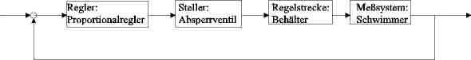
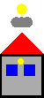
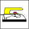
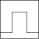
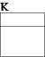
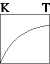
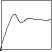
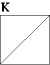
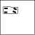

Ein einfaches Beispiel zur Regelungstechnik ist die Klospülung. In dem folgenden Java-Applet ist das dargestellt. Falls Sie das Applet nicht sehen können, müssen Sie geblockte Inhalte zulassen oder Java aktvieren. Falls jemand ein Beispiel für Regelungen in seinen Powerpointvortrag oder Open Office Express braucht, kann er gerne eines meiner Beispiele verwenden. Man kann einen Teil des Bildschirms mit dem Microsoft Expression Encoder 3 Filmen. Daraus kann man beispielsweise eine Datei erzeugen:klospuelung.wmv Diese Videodatei kann in eine Präsentation eingebaut werden:beispiel.zip. Der geknickte blaue Strahl, stellt den Zufluss zum Behälter dar. Der Behälter füllt sich kontinuierlich. Ist der Wasserstand so hoch, das der Schwimmer (rot) angehoben wird, steigt der Schwimmer und senkt sich das Absperrvetil (rot). Der Wasserbehälter ist gefüllt. Nun kann die Spülung betätigt werden.
Der Regler ist die Stange die sich dreht. Es ist ein Proportionalregler mit Arbeitspunkt. Der Steller ist ein Proportionalventil, das den Wasserzustrom begrenzt. Der Behälter ist die integrierende Regelstrecke. Der Schwimmer ist das Meßsystem. Das Beispiel aus dem Sanitärbereich soll nicht suggerieren, daß Kybernetik Sanitärtechnik ist.
Im Studium war Regelungstechnik abstrakt erklärt worden. Das will ich anders machen. Im Frontalunterricht an der Tafel konnten hauptsächlich Fromeln verwendet werden. Das will ich besser machen und mit Hilfe von Animationen Teile der Regelungstechnik beschreiben.
Es ist ein Kurs fü Regelungstechnik auf meiner Homepage. Die mathematischen/regelungstechnischen Theorien werden
mit Simulationen veranschaulicht. Dazu gibt es Experimente mit einem Modellbauauto:
Als erstes möchte ich den Unterschied zwischen Regelungstechnik und Steuerungstechnik erläutern. Das Beispiel für eine Füllstandsregelung wird mit einem Beispiel für eine Füllstandssteuerung verglichen.
|  | In diesem Beispiel wird die Lichtstärke konstant gehalten. Man kennt die Drehköpfe oder Schieber von Lampen. Wenn die Lichtverhältnisse aussen sich ändern, muss man das Licht aufdrehen oder wenn es zu hell ist und blendet zudrehen. Das wird im ersten Beispiel von Hand gemacht. Im zweiten Beispiel wird es automatisiert. Nun zur Lichtregelung. |
|  | Ein gutes Beispiel für eine Regelung ist das Bügeleisen als 2 Punkt Regler |
Ein Beispiel für eine Füllstandsregelung
Danach wird ein lineares mit einem nichtlinearen System verglichen.
|  | Bevor man die Systeme mit Testfunktionen beaufschlagt, zeigt diese Animation die Frequenzanteile dieser Testfunktionen |
Im folgenden werden einige Regelkreisglieder vorgestellt und mit Testfuktionen angesteuert.
| Strukturbild | Regelkreiselement | Strukturbild | Regelkreiselement | Strukturbild | Regelkreiselement |
|  | Proportionalglied |  | verzögerungsglied 1. Ordnung |  | verzögerungsglied 2. Ordnung |
| Differenzierer |  | Integrierer |
Beim Vergleich lineares und nichtlineares System wurde gezeigt, dass für lineare Systeme das Superpositionsgesetz gilt und für nichtlineare Systeme nicht. Im folgenden Applet wird das Superpositionsgesetz für ein PT1-System angewandt. In dem Abschnitt Frequenzanteile von Testfunktionen wurde das Rechtecksignal als Überlagerung von verschiedenen Sinussignalen dargestellt. Die Systematwort der Sinuse wurde in folgendem Applet
Eine Idee wie eine gewünschte Regelung aussehen könnte ist die Kontoregelung. Ein Kontostand der hoffentlich immer psoitiv ist. Ein nichttechnisches Beispiel zum zeigen einiger regelungstechnischer Zusammenhänge.
| Sauna als kontinuierlicher Regler |
|  | Fahzeugregelung als Zustandsregler |
Ein instabiles Zinssystem